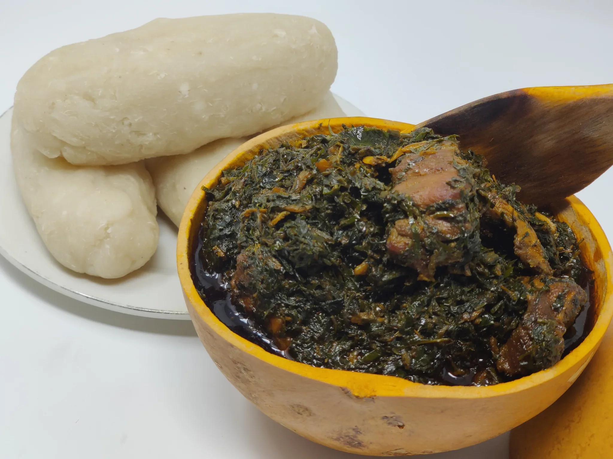

Receipe of Eru Made In Cameroun
Home Page

Description>
Eru Soup is a celebrated traditional dish from Cameroon, especially among the Bayangi people of the southwestern region.
It features finely shredded wild leaves of the plant Gnetum africanum (commonly called “eru” or “okazi”), which are cooked along with a softer green (such as water‑leaf or spinach) to create a textured, hearty soup.
Rich in flavour and aroma, the dish is elevated by generous palm oil, ground crayfish, smoked fish and assorted meats (such as beef or cow skin).
Ingredients
- ~900g mixed meat (e.g., beef chunks, cow skin / “kanda”)
- 500g smoked or dried fish, cleaned and deboned
- 300g-400g dried shredded eru/okazi leaves or about 500g fresh if available
- 750g waterleaf or substitute with spinach if unavailable
- ½ cup (≈50g) ground crayfish
- 2–3 cups palm oil (≈480 ml to 720 ml) or adjust per preference
- Seasoning cubes or powder (e.g., Maggi) to taste
- Salt to taste
- Optional: Hot pepper (Scotch bonnet or habanero) for heat
Step‑by‑Step Instructions
- Prepare the meats and fish: Clean, cube the beef and cow skin; wash the smoked/dried fish. Season the meats with salt and seasoning cubes, then cook until tender (this may take up to 30–40 minutes depending on the cow skin).
- Prepare the greens: If using dried eru/okazi leaves, soak them in warm water for about 30–60 minutes to soften. If using fresh, wash and finely shred them.
Cooking With Claudy Also wash and chop the waterleaf/spinach.
- Combine meat/fish and crayfish: Once the meats are tender, add the smoked/dried fish and the ground crayfish. Stir gently to incorporate.
- Add the waterleaf/spinach: Introduce the soft green leaves into the pot, and let them wilt and release their juices — avoid adding much extra water at this stage.
- Add the eru/okazi leaves: Stir in the shredded eru/okazi leaves. Immediately add the palm oil, mixing thoroughly so the oil coats the greens before the colour fades. This helps maintain the vibrant green‑ish hue of the soup.
- Final seasoning and simmer: Adjust salt, seasoning cubes and pepper. Simmer gently for another 5‑10 minutes, ensuring everything is well‑integrated and the texture is right (not too watery).
- Serve: Remove from heat and serve hot, accompanied by water fufu, garri or pounded yam. Pinch off the starchy side, form a ball, dip into the Eru and enjoy.
Other_Recipe